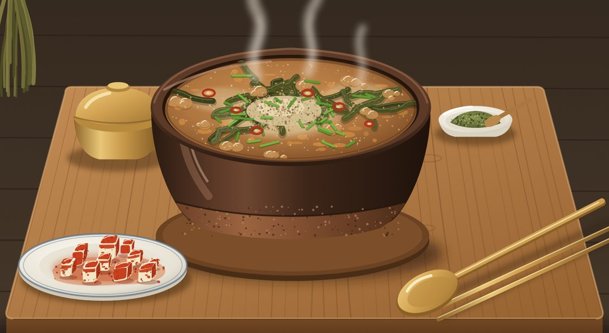

메뉴판 디자인 · SD-MN70
이 디자인으로 상담하기
논두렁 추어탕
국산 미꾸라지를 갈아 말린 시래기·들깨와 가마솥에 끓이는 남원식 추어탕 집의 메뉴판입니다. 왼쪽 볏짚 빛 세로 띠에 가게 이름을 세로로 세우고, 나무 쟁반 위 끓는 뚝배기를 비스듬히 내려다본 그림을 크게 놓았습니다. 갈아서와 통으로 중 고르는 방법, 산초 넣는 순서까지 처음 온 손님이 읽기 쉽게 적었습니다.
A4 세로 · 1쪽 · 한국어 · 원화볏짚 노랑 · 한지 미색 · 산초 초록비스듬히 본 뚝배기 추어탕 그림
![논두렁 추어탕 메뉴판 전체. 왼쪽 볏짚 노란색 세로 띠에 논 이랑 선이 깔리고, 큰 명조 세로 글씨로 논두렁 추어탕, 작은 세로 글씨로 남원식 · 국산 미꾸라지, 맨 아래 벼 이삭 그림이 있습니다. 오른쪽 한지 미색 바탕 위쪽에 큰 명조 제목 추어탕과 갈아서 끓이는 남원식 · 점심 11시부터, 국산 미꾸라지를 뼈째 곱게 갈아 말린 시래기와 들깨를 넣고 가마솥에서 네 시간 끓인다는 소개가 있습니다. 가운데 짙은 마루 바탕 그림에는 나뭇결 쟁반 위 나무 받침에 놓인 검갈색 뚝배기가 비스듬히 보이고, 끓는 국물 위에 짙은 시래기, 가운데 수북한 들깨가루, 잘게 썬 부추, 붉은 고추 고리, 기포가 떠 있으며 김이 세 줄 올라옵니다. 왼쪽에 뚜껑 덮인 놋 밥그릇과 파란 테 흰 접시에 붉은 양념 국물과 함께 담긴 깍두기, 오른쪽에 산초가루 종지와 놋수저·놋젓가락이 놓여 있고 왼쪽 위에는 말린 시래기 타래가 걸려 있습니다. 아래 왼쪽 탕 칸에 추어탕 11,000원(초록 글씨, 갈아서 · 기본과 통으로 중 선택), 특 추어탕 14,000원, 추어 칼국수 10,000원, 전골·튀김 칸에 추어 전골 2인 32,000원 · 3인 45,000원, 미꾸라지 튀김 15,000원, 추어 만두 6개 7,000원이 있습니다. 오른쪽에 곁들임 공기밥 1,000원 · 칼국수 사리 2,000원, 포장 추어탕 1인분 팩 10,000원 · 냉동 3팩 세트 28,000원, 마실 것 생막걸리·소주·맥주 5,000원 · 식혜·탄산음료 2,000원, 산초 넣는 순서 세 단계 상자가 있고, 맨 아래 짙은 갈색 띠에 영업시간과 주소·전화 자리표시가 있습니다.](page1.png)

끓는 뚝배기 한 그릇시래기 결과 들깨가루, 부추와 고추 고리, 유약 바른 윗단과 거친 흙빛 아랫단까지 뚝배기를 비스듬한 시점으로 그렸습니다
바꿔 드릴 수 있는 것
- 메뉴 이름, 가격, 고르는 방법, 영업시간
- 뚝배기 속을 순댓국·감자탕·곰탕 등 가게 대표 메뉴로
- 벽걸이 메뉴판, 테이블 한 장 메뉴, 포장 안내 전단